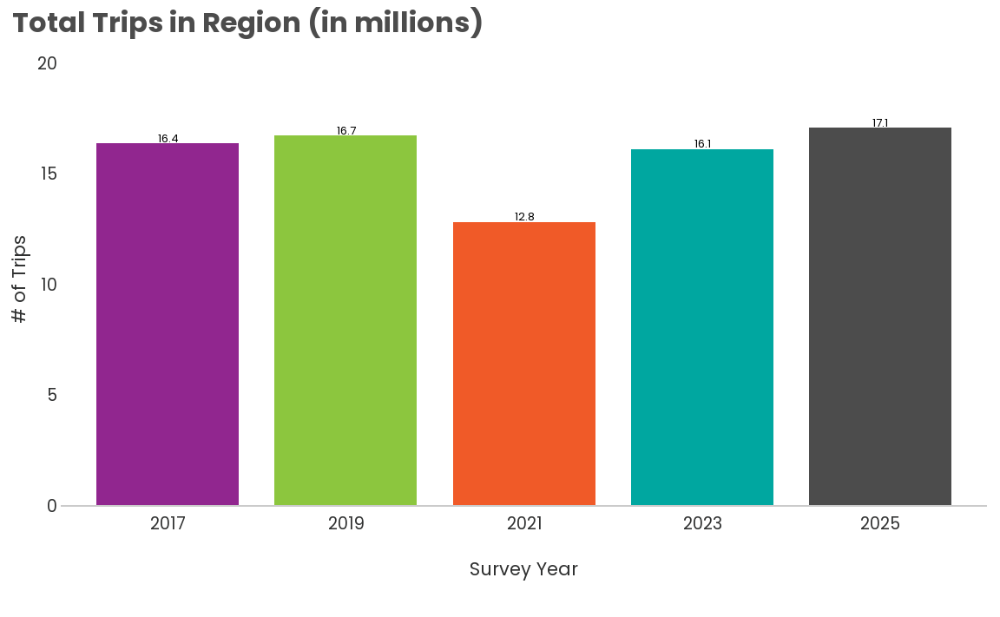
Walk & Bike/Micromobility Summary
Trips in Region
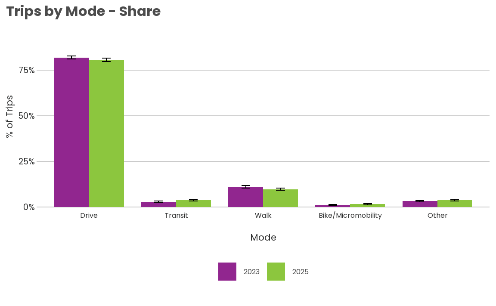
Walking and Bike/Micromobility Trips
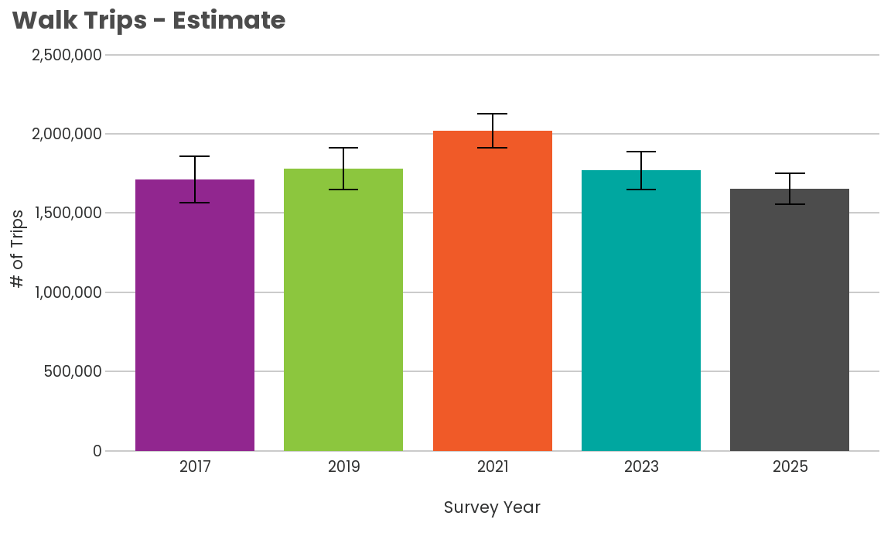
survey_year mode_class_5 count prop prop_moe est est_moe
<char> <ord> <int> <num> <num> <num> <num>
1: 2017 Walk 6750 0.10451918 0.008596931 1712548 144688.50
2: 2019 Walk 9736 0.10648792 0.007605951 1781424 130463.48
3: 2021 Walk 1816 0.15743899 0.008302067 2020069 106976.73
4: 2023 Walk 6918 0.10977709 0.007116078 1770246 119237.76
5: 2025 Walk 3513 0.09671155 0.005748808 1653806 98966.81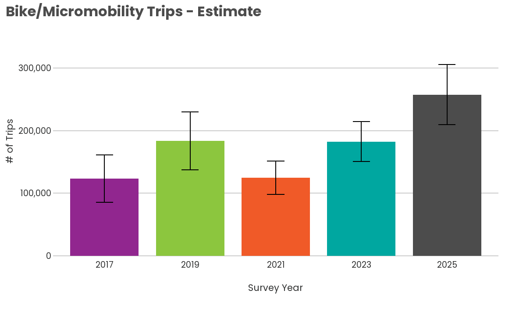
survey_year mode_class_5 count prop prop_moe est
<char> <ord> <int> <num> <num> <num>
1: 2017 Bike/Micromobility 820 0.007510197 0.002308935 123054.7
2: 2019 Bike/Micromobility 1160 0.010972633 0.002753399 183559.9
3: 2021 Bike/Micromobility 137 0.009726335 0.002074103 124796.7
4: 2023 Bike/Micromobility 874 0.011302693 0.001981822 182265.2
5: 2025 Bike/Micromobility 473 0.015051963 0.002801254 257394.5
est_moe
<num>
1: 37885.81
2: 46186.38
3: 26594.24
4: 31983.75
5: 48171.14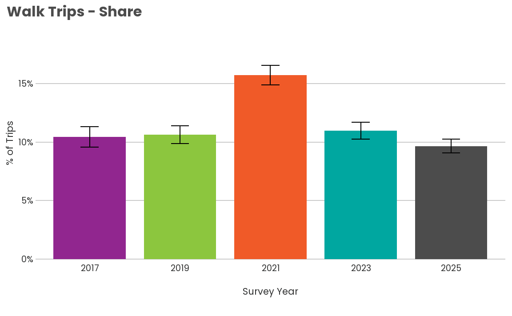
survey_year mode_class_5 count prop prop_moe est est_moe
<char> <ord> <int> <num> <num> <num> <num>
1: 2017 Walk 6750 0.10451918 0.008596931 1712548 144688.50
2: 2019 Walk 9736 0.10648792 0.007605951 1781424 130463.48
3: 2021 Walk 1816 0.15743899 0.008302067 2020069 106976.73
4: 2023 Walk 6918 0.10977709 0.007116078 1770246 119237.76
5: 2025 Walk 3513 0.09671155 0.005748808 1653806 98966.81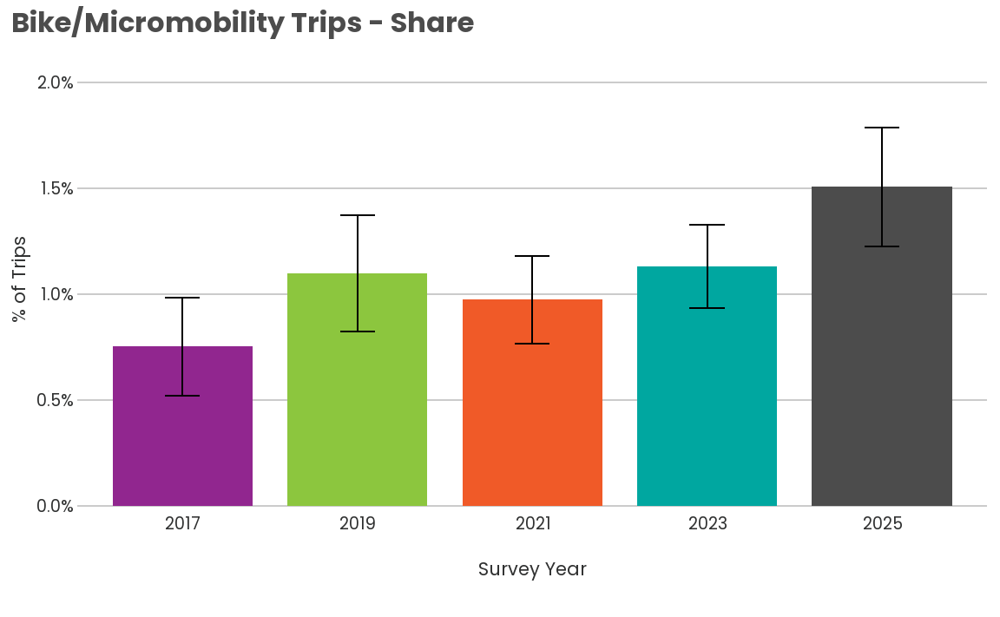
survey_year mode_class_5 count prop prop_moe est
<char> <ord> <int> <num> <num> <num>
1: 2017 Bike/Micromobility 820 0.007510197 0.002308935 123054.7
2: 2019 Bike/Micromobility 1160 0.010972633 0.002753399 183559.9
3: 2021 Bike/Micromobility 137 0.009726335 0.002074103 124796.7
4: 2023 Bike/Micromobility 874 0.011302693 0.001981822 182265.2
5: 2025 Bike/Micromobility 473 0.015051963 0.002801254 257394.5
est_moe
<num>
1: 37885.81
2: 46186.38
3: 26594.24
4: 31983.75
5: 48171.14Trips by Household Income
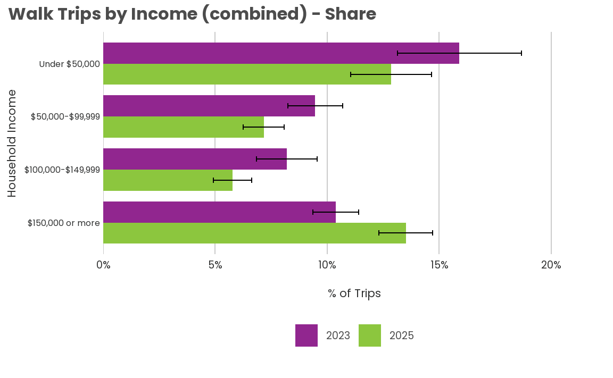
survey_year hhincome_detailed_combined mode_class_5 count prop
<char> <fctr> <ord> <int> <num>
1: 2023 Under $50,000 Walk 1596 0.15909471
2: 2023 $50,000-$99,999 Walk 1628 0.09465707
3: 2023 $100,000-$149,999 Walk 1084 0.08210819
4: 2023 $150,000 or more Walk 1951 0.10382684
5: 2025 Under $50,000 Walk 540 0.12850975
6: 2025 $50,000-$99,999 Walk 764 0.07170949
7: 2025 $100,000-$149,999 Walk 574 0.05779451
8: 2025 $150,000 or more Walk 1419 0.13512082
prop_moe est est_moe
<num> <num> <num>
1: 0.027616030 432013.5 83381.93
2: 0.012249557 364815.2 48126.32
3: 0.013531686 234011.3 39387.59
4: 0.010256278 533616.3 53178.23
5: 0.018041877 308265.1 45598.39
6: 0.009045799 262212.2 32573.45
7: 0.008489008 171877.6 24832.88
8: 0.011977687 784634.4 72873.19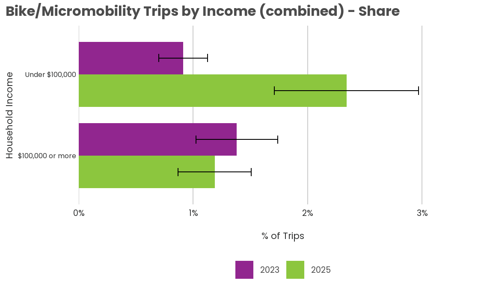
survey_year hhincome_bike mode_class_5 count prop
<char> <fctr> <ord> <int> <num>
1: 2023 Under $100,000 Bike/Micromobility 329 0.009138179
2: 2023 $100,000 or more Bike/Micromobility 484 0.013822360
3: 2025 Under $100,000 Bike/Micromobility 166 0.023398848
4: 2025 $100,000 or more Bike/Micromobility 288 0.011891333
prop_moe est est_moe
<num> <num> <num>
1: 0.002118862 60033.46 13825.22
2: 0.003567373 110434.01 28628.46
3: 0.006292435 141688.40 38583.01
4: 0.003189440 104416.06 28126.61Trips by Race/Ethnicity
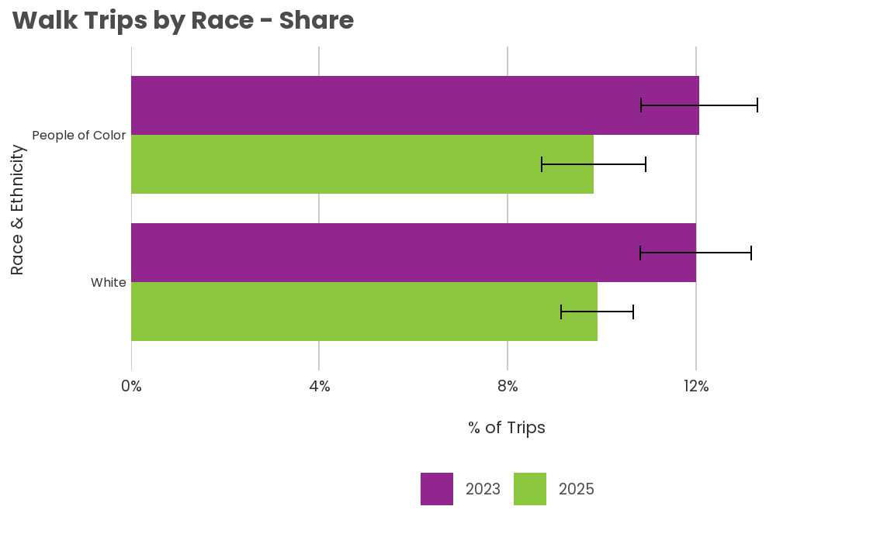
survey_year race_binary mode_class_5 count prop prop_moe
<char> <char> <ord> <int> <num> <num>
1: 2023 People of Color Walk 1930 0.12060000 0.012315273
2: 2023 White Walk 4207 0.11995445 0.011759807
3: 2025 People of Color Walk 964 0.09820274 0.010989190
4: 2025 White Walk 2100 0.09898436 0.007615453
est est_moe
<num> <num>
1: 568912.4 58406.23
2: 933581.3 97876.70
3: 525877.2 59747.40
4: 742814.0 57528.59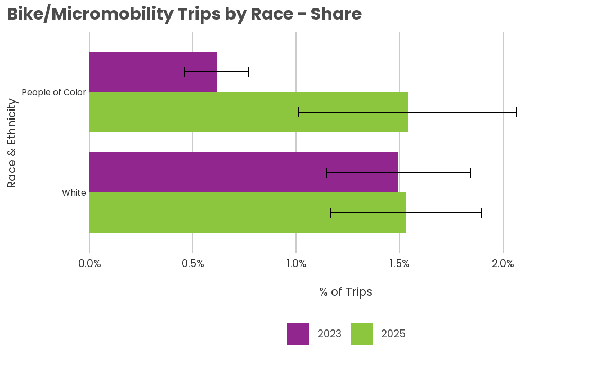
survey_year race_binary mode_class_5 count prop prop_moe
<char> <char> <ord> <int> <num> <num>
1: 2023 People of Color Bike/Micromobility 196 0.006163151 0.001536736
2: 2023 White Bike/Micromobility 575 0.014946559 0.003481921
3: 2025 People of Color Bike/Micromobility 131 0.015389344 0.005276491
4: 2025 White Bike/Micromobility 277 0.015318572 0.003640859
est est_moe
<num> <num>
1: 29073.74 7153.238
2: 116326.06 27204.677
3: 82410.18 28435.645
4: 114956.03 27470.645Trips by Age
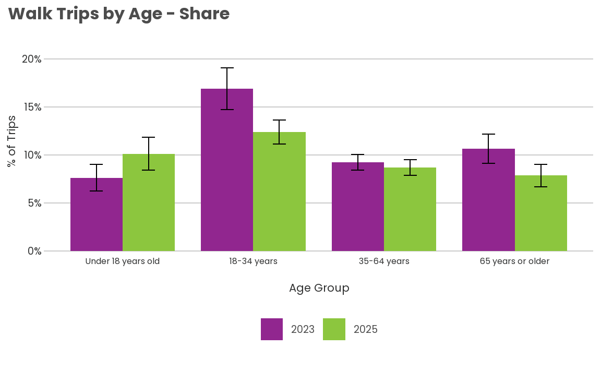
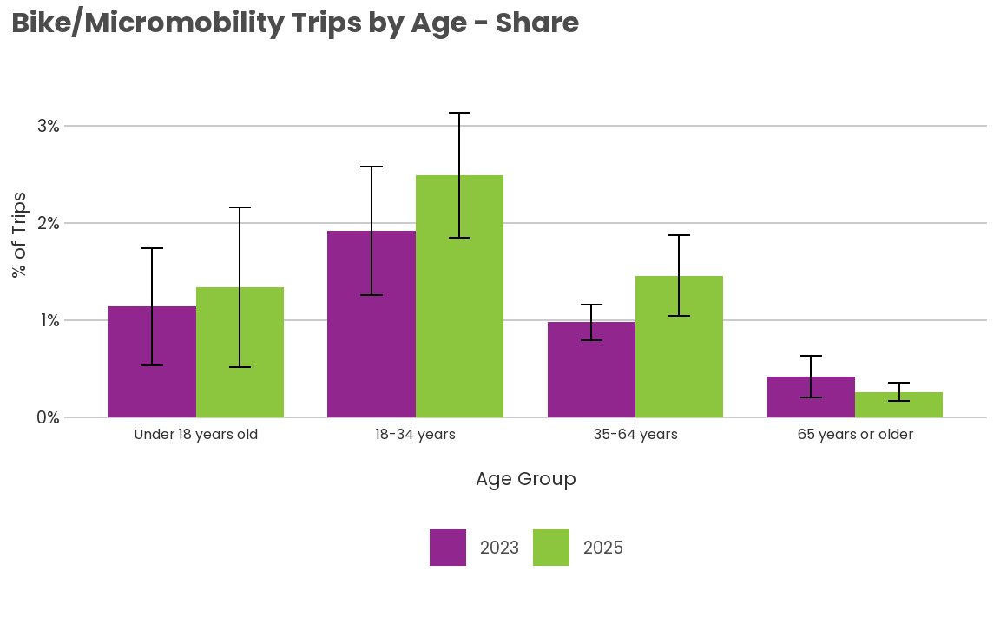
Trips by Gender
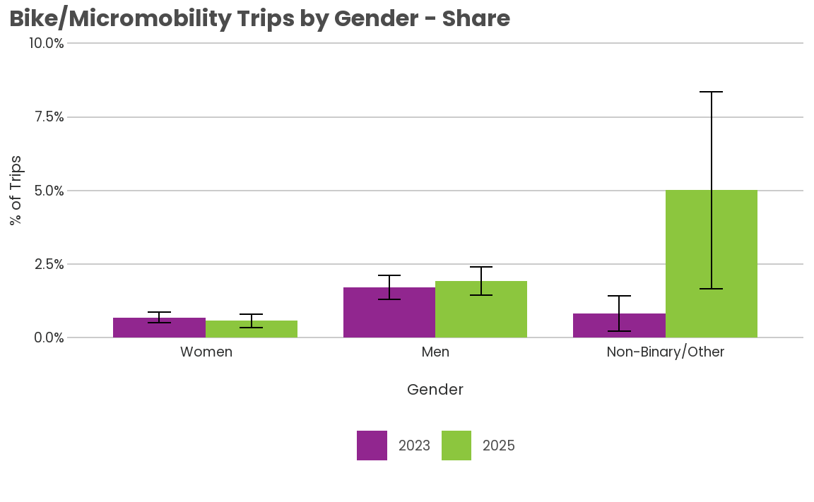